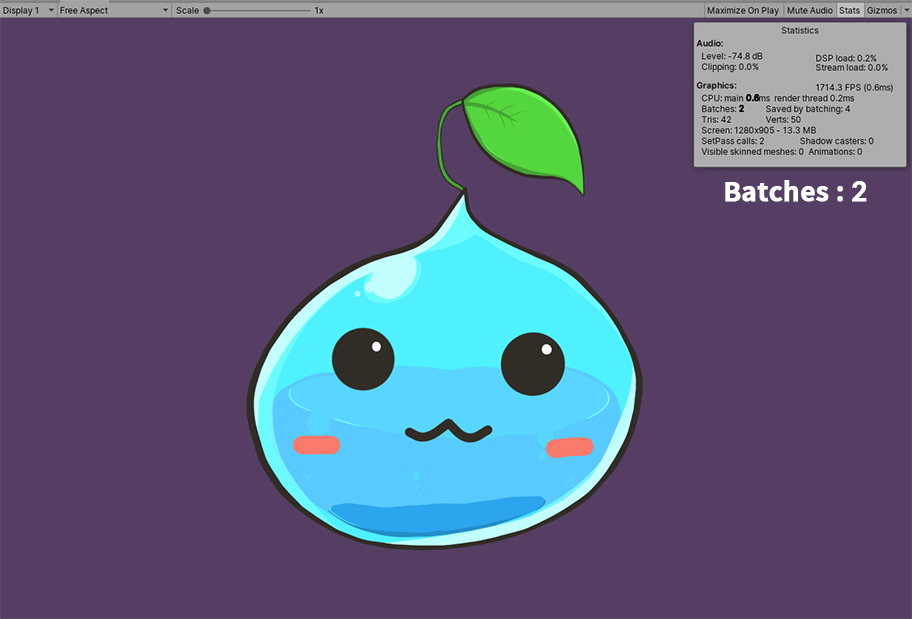
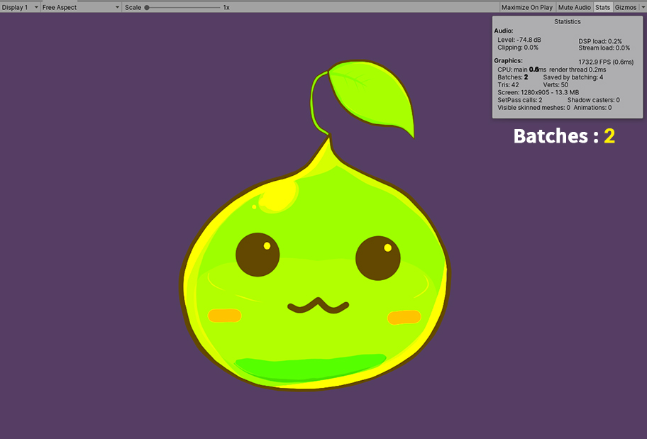
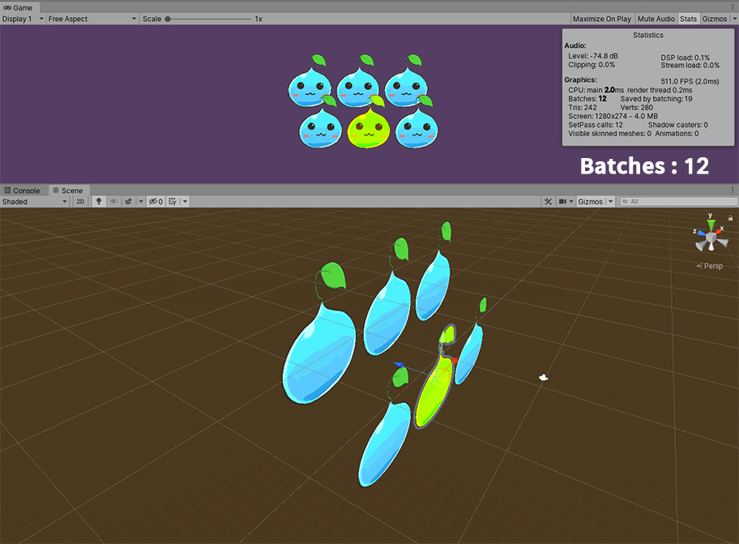
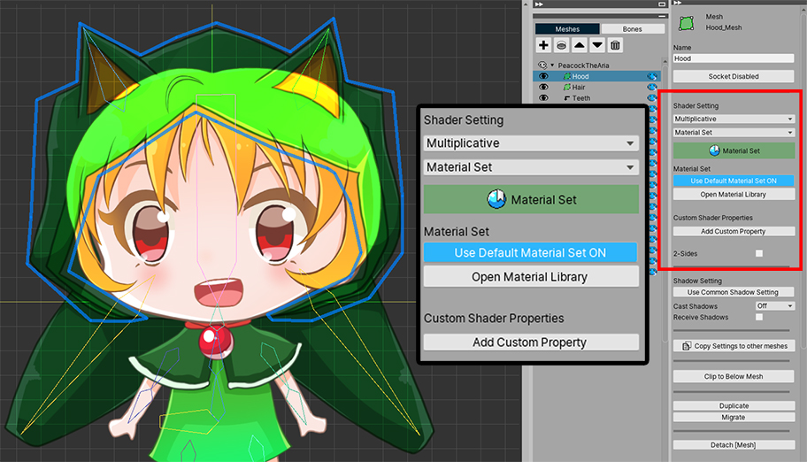
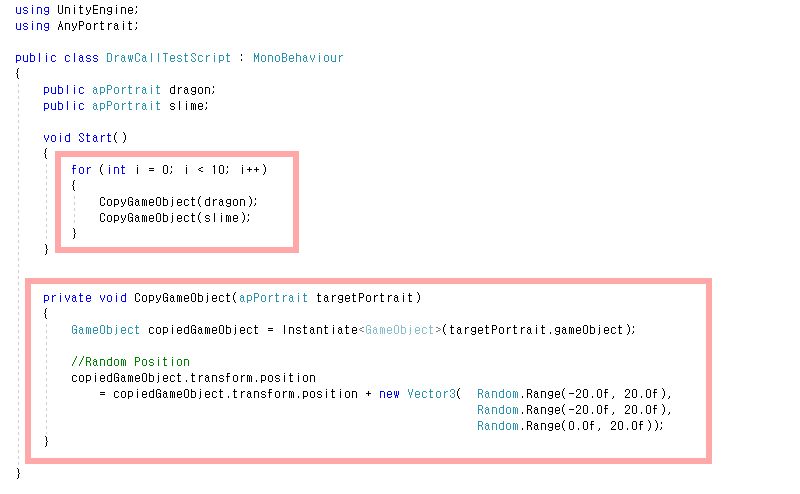
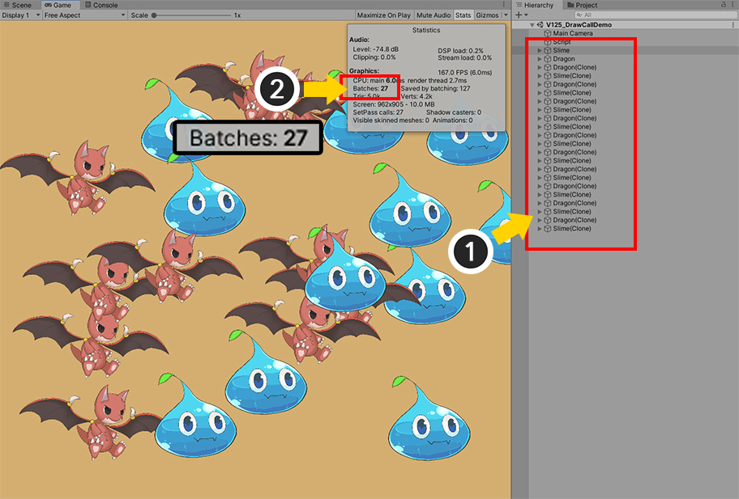
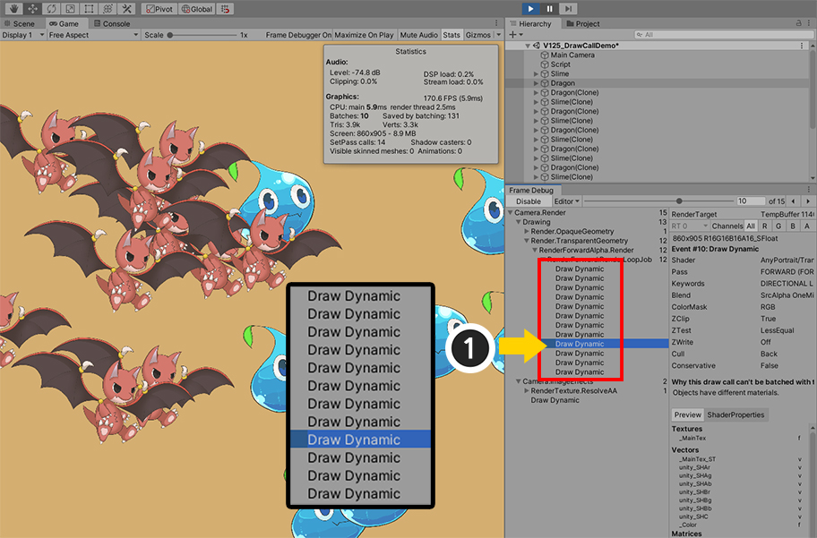

AnyPortrait > マニュアル > ドローコールを減
ドローコールを減
1.3.5
ゲームのパフォーマンスを最適化するための最も効果的な方法の一つは、 「ドローコール（Draw call）」を減らすことです。
「ドローコール」は、オブジェクトや要素をレンダリングする回数を意味します。
簡単に考えると、オブジェクトが多いほどドローコールが増加します。
しかし、レンダリング設定とマテリアルの属性によっては、ドローコールが実際のオブジェクトの数よりも減少することができます。
ドローコールを減らす方法については、Unityとコミュニティとフォーラムの記事を参照していただくことをお勧めします。
このページは、ドローコールを減らすことができるAnyPortraitの機能をスクリプトを介して比較して確認する内容を含んでいます。
また、ドローコールが増加する設定にに関しても説明します。
スクリプトを利用する場合は、「関連ページ」を参照してみてください。
注意
Unityは「ドローコール」を「Batch Count」と表記します。
両方の概念は、処理上の若干の違いがありますが、だいたいの値がほぼ同じで、二つの言葉は同じものとして扱われたりします。
このページでは二つの言葉は混用され、同じ意味で使用することを参照して願います。
AnyPortraitのドローコール管理方式
AnyPortraitのシステムは、ドローコールを減らすことができるさまざまな機能と最適化手法を提供しています。
1. ドローコールが増加しないように最適化されている場合
- キャラクターのメッシュが同じテクスチャとマテリアルにレンダリングされると、ドローコールが最適化されます。
- 共通のテクスチャとマテリアルを共有する複数のキャラクターがゲームに配置されると、ドローコールが減少します。
- キャラクターのTransformの「Scale」の値が負になってもドローコールは増加しません。
- メッシュの色やテクスチャを変えるスクリプト関数の中では、その対象が「Image」である場合、該当のキャラクター内ではドローコールが増加されることが防止されます。しかし、「他のキャラクター」とのドローコールの共有は解除されます。
2. ドローコールが増加した場合
- テクスチャが違ったり、他のマテリアルを使用している場合、ドローコールは増加します。
- 色のアニメーションが適用されたか、スクリプト関数で、特定のメッシュの色を任意に変更した場合ドローコールが増加します。
- 「カメラからのDepth」によってドローコールが増加することができます。 （同じマテリアルを持つメッシュが連続して配置された場合にのみ、ドローコールが減少します。）
- 「クリッピングメッシュ（Clipping Mesh）」は、「レンダリングテクスチャ（RenderTexture）」を利用するため、ドローコールが増加します。
- AnyPortraitで使用していない別のShaderプロパティを使用する場合はドローコールが増加します。
AnyPortaitのドローコール最適化の手順は、3つです。
1. 多数のキャラクターが最小のドローコールでレンダリング
- ドローコールが最も最適化されている段階であり、同じマテリアルを共有するキャラクターが同じドローコール内でレンダリングがされます。
2. 単一キャラクターのメッシュが最小のドローコールレンダリング
- 単一キャラクター内でドローコールが最適化されている段階です。他のキャラクターとドローコールが共有されないが、この段階でもドローコールの多くを減らすことができます。
3. ドローコールが共有されていないメッシュが存在
- 単一キャラクターのメッセージの中で一部が他のドローコールでレンダリングがされるので、ドローコールが増加します。
ドローコールを最適化するための設定

Unityエディタでドローコールを確認する最も簡単な方法は、上記になります。
(1) 「Game画面」を選択します。
(2) 「Statsボタン」を押します。
(3) 「Batches」の値が「ドローコール数」です。
上画面は、1つのキャラクターだけ配置たのにドローコールが「6」やされます。
「ドローコール計量（Draw call batching）」がされていなくて、すべての要素が、それぞれのドローコールでレンダリングがされています。

「Player Settings」を開きます。
- Unityエディタのメニューの「Edit > Project Settings」を開き、「Player」の項目を選択するか、
- Unityエディタのメニューの「File > Build Settings」から「Player Settings」を選択します。
「Other Settings」から「Dynamic Batching」が無効になっている場合はドローコールが最適化されません。
「Dynamic Batching」をオンにします。

ゲームを実行すると、ドローコールが6で、「2」に減少します。
（背景が1つカウントされ、キャラクターのメッシュが1つカウントされます。）
「Universal Render Pipeline」での設定
「Universal Render Pipeline (URP) 」などの 「Scriptable Render Pipeline」を使用している場合、「Dynamic Batching」オプションは表示されません。
これは、従来のダイナミックバッチングよりも優れた最適化を行う「SRP Batcher」が自動的にオンになるためです。
つまり、「URP」を使用すると、上記の「Dynamic Batching」オプションを有効にする作業を行う必要がなくなります。
「SRP Batcher」については、「Unity」のドキュメントで詳細な説明をご覧ください。 (ドキュメントページ)
「SRP Batcher」オプションはデフォルトで非表示になっているため、これを確認したい場合は、次の説明を参照してください。
（URPが設定されている必要があり、Unityのバージョンによって異なる場合があります。）

(1) 「Unity Editor」メニューの「Edit > Preferences...」を開き、「Core Render Pipeline」メニューを選択します。
(2) 「Additional Properties」の「Visibility」項目の値を「All Visible」に変更します。

(1) 現在適用されている「URP Asset」を選択します。
(2) 「SRP Batcher」と「Dynamic Batching」のオプションを確認できます。
「SRP Batcher」がオンの場合は、すでに最適化されてレンダリングされるため、「Dynamic Batching」をオンにする必要はありません。
メッシュの色を変更する方法によるドローコールの変化の比較
メッシュの色を変更するときは、どのような方法を利用しているかに応じてドローコールが異なります。
これAnyPortraitのドローコール方式と関連があります。
下の例を見て最適化を行う際に活用しましょう。

モディファイヤを利用したり、「SetMeshColor(string transformName, Color color2X)」などの関数を利用して、1つのメッシュの色を変えました。
この場合は、「最も低い最適化レベル」であり、それぞれのメッシュのドローコールが互いに共有されていない状態です。
色が変わったメッシュが、他のドローコールでレンダリングがされ、ドローコールが「4」に増加しました。
色のアニメーションは、便利な方法であるが、ドローコールが増加することができますので、注意が必要です。
もしメッシュの色がデフォルトの（0.5、0.5、0.5、1.0）に復元されると、ドローコールが減少し、
「ResetMeshMaterialToBatch(string transformName)」のように材質の設定を復元する関数を使ってドローコールを最適化することもできます。
メッシュの色を一括的にすべて変更した場合どうなるのかを確認してみましょう。
メッシュの色をすべて変えるスクリプト関数は次の二つを主に利用されます。
- SetMeshColorAll(Color color2X) : すべてのメッシュの色をマテリアルに関係なく変更します。
- SetMeshColorAll(string optTextureName, Color color2X) : 関数の引数として入力された画像を使用しているメッシュを対象に、色を変更します。
ほぼ同じに見える関数であるが、処理方法に応じてドローコールの違いがあります。

「SetMeshColorAll(Color color2X)」関数を利用した結果です。
この関数は、「SetMeshColor」関数は、すべてのメッシュに一つずつ一括して適用されたものです。
SetMeshColor関数が「最も低い最適化レベル」の関数であるため、色に関係なく、メッシュはマテリアルをもう共有しません。
したがってドローコールが最適化される前の値である「6」となった。

「SetMeshColorAll(string optTextureName, Color color2X)」関数を利用した結果です。
引数として画像の名前を入れたので、この関数は、「メッシュ」を対象とするのではなく、 "イメージ"を対象としています。
メッシュが互いに共有するマテリアルの色を直接変更するため、メッシュは継続して、互いに同じマテリアルを共有します。
したがって、この関数は、「中間の最適化レベル」として「単一キャラクター内でのドローコールの最適化」を実行します。
結果的にドローコールは、最適化された状態である「2」の値を保持します。
1.3.5
AnyPortrait v1.3.5 では、「SetMeshColorAll(Color color2X)」などのバッチ変更関数を使用しても、ドローコールが最適化された状態を維持するように改善されました。
多数のキャラクターが配置されたときのドローコール比較

多数のキャラクターが配置されると、ドローコールは増加します。
様々な種類のオブジェクトが配置されるとドローコールも一緒に増加します。
しかし、もしAnyPortraitで製作された文字だけ配置された状態で、そのキャラクターが同じテクスチャとマテリアルを共有する場合ドローコールは、大幅に減少します。
（条件のみ正しければ、ぜひオリジナルのキャラクターが複製された場合でなくてもマテリアルを共有します。）
上記の場合には、6つのキャラクターが配置されています。
しかし、AnyPortraitの「最も高い最適化レベル」を維持した状態では、ドローコールが大幅に減少して「2」に減少したことを見ることができます。
色を変更せずに、基本的なマテリアルの属性だけを使用して、同じテクスチャを利用する場合は、別の操作がなくても、AnyPortraitで製作された文字は、お互いを認識してマテリアルを共有し、ドローコールを減らします。

一つのキャラクターを選択し、「SetMeshColorAll(string optTextureName, Color color2X)」関数を呼び出しました。
先に「中間の最適化レベル」であるこの関数を適用すると、そのキャラクターはもう他のキャラクターとマテリアルを共有しません。
したがってドローコールが2で「12」に増加します。
もちろん、これは全体の30個のメッシュと1つの背景を合わせた31という値（予想される最大値）よりかなり少ない値です。
しかし、最も最適化された値である2に比べて多く増加した。
この結果は、ドローコールが「Batching」されている条件の一つである、「連続したレンダリング順序」によるものです。
下の追加の説明を確認してみてください。

現在シーンにキャラクターがどのように配置されているかどうかを確認してみましょう。
上記のキャラクターは少し後ろにあり、同じ行のキャラクターは同じZ位置を持っています。
色が変更されたキャラクターとの「ようなZ位置」を持つため、異なるマテリアルを使用しているメッシュのレンダリング順序が互いに入り乱れてしまいました。
したがって、レンダリングを順次ながらレンダリングがされているマテリアルが転換される状況が多く発生することです。
このような状況は、いくつかのグループのオブジェクトがマテリアルを互いに共有しても、効果的にドローコールを減らさない。

キャラクターのZ位置を変更して、ドローコールがどのように変化するかを確認してみましょう。
単純にZ位置が同じでなく、「順次前後配置」されるように作られました。
Z位置に応じて順次レンダリングをするときに、「色が変わったキャラクター」のメッシュが他のキャラクターと入り混じってのようにレンダリングをされている状況を回避しました。
したがってドローコールの数が12から再び「4」へと大きく減りました。
この原理を理解すれば、もう少し最適化を行うことができます。

「色が変わったキャラクター」が最も前に出てくるように配置しました。
その他の他のキャラクターたちが共にレンダリングされるように意図的に配置したので、
ドローコールは、最小値である「3」になりました。
この場合は、最も完全に最適化された状態であるが、実際にゲームでドローコールを減らすために、オブジェクトの位置を変えることは困難である。
代わりに、ドローコールが最適化されやすい状況が多く発生するように構成されることをお勧めします。

すべてのキャラクターに「SetMeshColorAll(string optTextureName, Color color2X)」関数を適用すると、どうなるでしょう？
この関数は、「中間の最適化レベル」であるので、一旦呼び出しがされると、「キャラクターの中からのドローコールの最適化」は、保持され、「他のキャラクターとのドローコールの最適化」は、もう実行されません。
色とは無関係に、ドローコールは「7」に増加しました。
現在の値は文字の「Z位置」が適切に分散された場合に見ることができ（背景1、キャラクター6）、
上述のように、Z位置が同じでレンダリング順序が入り混じった場合ドローコールの最適化がされていない可能性があります。

上画面は同じ状況でキャラクターのZ位置のみ同一にした状態です。
ドローコールの最適化が全くされていなくて、ドローコールは最大値である「31」になりました。
ドローコールはUnityエンジンの内部的な処理なので、「Z位置」の他にも、様々な増減原因があります。
他のドキュメントを介してドローコールを最適化することができる方法を適用しましょう。
ドローコールが増加することができる属性
ドローコールが増加することができる条件はあります。
以下は、上記の関数や色モディファイヤを除き、AnyPortraitの機能の中でドローコールを増加させることを紹介します。

一つのキャラクターに「複数の画像」が使用される場合ドローコールは増加します。
複数の小さな画像ではなく、「一つの大きな画像」を利用することが効果的であることがあります。
（ビルド環境と機器に応じて異なる場合がありますので、事前に確認をしてください。）

「クリッピングメッシュ（Clipping Mesh）」は、「レンダリングテクスチャ（Render Texture）」技法を利用します。
レンダリングテクスチャの特性上、クリッピングメッシュは、他のメッシュとドローコールを共有しません。
クリッピングマスクメッシ、クリッピングされたメッシュの両方レンダリングされるときドローコールが増加します。

メッシュの「Shader Setting」をデフォルトとは異なる設定すると、他のメッシュとマテリアルを共有することができません。
設定が変更されたメッシュは、常に「最も低い最適化レベル」になります。
Blend方式を「Alpha Blend以外の値」に設定するか、デフォルト値とは異なる「マテリアルセット（Material Set）」を使用している場合がこれに該当します。
スクリプト関数（「SetMeshCustomFloatAll」関数など）や、この画面で「Add Custom Property」機能を利用して、マテリアルの「カスタム属性」を利用することもドローコールが増加する原因となります。

ゲームで確認してみると、いくつかのメッシュたちによってドローコールが多く増加したことを見ることができます。
「Sorting Group」を利用してドローコールを減らす
上記の説明にもかかわらず、ドローコールが増加する場合はあります。
特に、異なるキャラクターやオブジェクトが多く配置された状態では、ドローコールを減らすことは困難です。
AnyPortraitのように「Mesh Renderer」で構成されたオブジェクトが多数登場すれば、ドローコールが大幅に増加することができます。
この時、「Sorting Group」を利用して、ドローコールを効果的に削減することができます。 （関連ページ）
今回はUnityの「Frame Debugger」を利用して、レンダリングプロセスを詳細に説明します。

二種類のキャラクターが配置されたシーンです。
二つのキャラクターの両方AnyPortraitで製作されました。

ゲームが開始されると、二つのキャラクターが10個より多くのクローンされて生成されるように、簡単なスクリプトを作成してみました。
複製されたキャラクターが範囲内でランダムに位置するように作成しました。

ゲームを実行してみましょう。
(1) スクリプトが動作しキャラクターが複製されます。
(2) ドローコールが「27」で示している。
任意の位置に複製されるため、ゲームを実行するたび結果は少しずつ異なりますが、キャラクターが増加し、ドローコールも一緒にほぼ比例するように増加された点が非常に残念です。
複製されたキャラクターは、オリジナルと同じマテリアルであるため、可能であればドローコールを共有にすることをお勧め。

「Frame Debugger」を実行して、レンダリングプロセスを確認してみましょう。
Window > Analysis > Frame Debuggerを実行します。

(1) ゲームを実行している (2) 「Enableボタン」を押します。
(3) 現在のフレームでレンダリングがどのように進行されたことを示します。

半透明の材質を有するメッシュを確認する必要がので、「Drawing > Render.TransparentGeometry > RenderForwardAlpha.Render > RenderForward.RenderLoopJob」を確認します。
(1) メッシュがレンダリングされた順序が表示されます。 「Draw Dynamic」は、複数のメッシュが1つのドローコールでのようにレンダリングされたことを意味するので、ある程度の最適化がされたわけです。
問題は、(2) のように「それぞれのメッシュが一つずつ表示される現象」が発生するということです。
上記のような結果が表示される場合、レンダリングの過程で異なるマテリアルを持つメッシュが順番にレンダリングがされています。
これは、特に複数のメッシュで構成されAnyPortraitのキャラクターで現れやすい現象です。
メッシュがそれぞれ表示される途中で、似たようなZ値を持つ他のキャラクターのメッシュが混ざってレンダリングが行われたものです。
「Sorting Group」を利用すれば、上記のように、「他のキャラクターのメッシュと混じって表示されること」を防ぐことができます。

(1) AnyPortraitキャラクターをそれぞれ選択します。
(2) 「Sorting Order Option」の値を「Depth To Order」に変更します。
(3) 「Sorting Group」コンポーネントを追加します。
（「Sorting Group」コンポーネントはAnyPortraitキャラクターの親GameObjectに追加してもされます。）

再度ゲームを実行し、「Frame Debugger」の「Enableボタン」を押して、結果を確認してみましょう。
(1) すべてのレンダリングの段階が「Draw Dynamic」と表記されていることを見ることができます。
また、「Sorting Group」単位でレンダリングが行われるため、ドローコールがたくさん減ったことを見ることができます。
ドローコールをかなり減らし、現在の最適化の結果は、一般的なゲームのプロジェクトに適用される良好な状態です。
しかし、ここでもう少しドローコールを減らすことができれば素晴らしいことです。
現在の段階では、「キャラクター単位でレンダリング」するのだが、最も最適化された手順は、「マテリアル単位でレンダリング」するものだからです。
この最適化戦略は、ゲームによっては困難な場合がありますが、可能であれば試してみるみるのもいいでしょう。

この方法は、「同じ種類のキャラクターごとに」独自のレンダリング順序を持っていれば、「同じマテリアルを持つメッシュが同じドローコールを持つことができる点」を応用したものです。
(1) 二つのキャラクターのいずれかを選択します。この例では、「スライム」のキャラクターを選択しました。
(2) 「Sorting Group」で (3) 「Order in Layer」の値をデフォルト値の「0」ではなく、 「1」に変更します。
他のキャラクターが追加であれば、それぞれのキャラクターの種類ごとに異なる「Sorting Order」を持つように設定します。

(1) ゲームを実行し、「Frame Debugger」で結果を確認してみるの「キャラクターの数」ではなく「キャラクターの種類」だけドローコールが発生したことを見ることができます。
(2) 背景を含めると、わずか「3」のドローコールカウントのみ発生しました。
この方式では、キャラクターの種類に応じて、レンダリングの順序が固定されている問題があります。
（上の画像では、すべて「スライム」は、すべての "ドラゴン"の前に位置します。）
しかし、あなたが作るゲームで「レンダリングの順序」が重要でなくキャラクターがたくさん登場すれば、この最適化戦略を活用して見るのもいいでしょう。